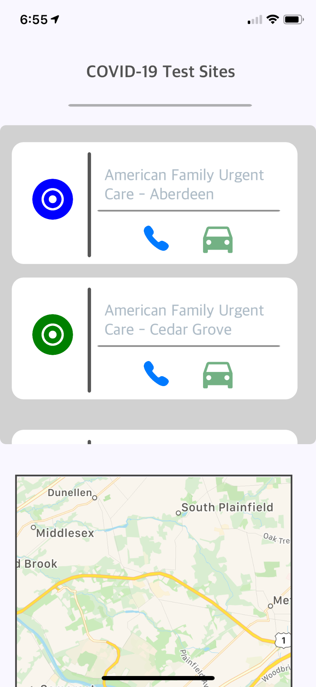

InstaCare: COVID-19 Testing and Treatment
An app that helps users find and access prompt medical care and testing for COVID-19. Student-developed in the George Washington University's Innovation Lab.
Learn More

An app that helps users find and access prompt medical care and testing for COVID-19. Student-developed in the George Washington University's Innovation Lab.
Learn More